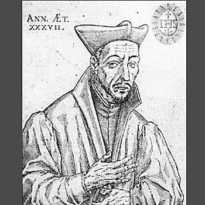

Isusovački blaženici
Svećenik
Bl. Jakov Salès
1556. – 1593.
Francuski isusovački teolog i propovjednik posvetio je službu poučavanju vjere. Ubijen je u Aubenasu jer nije htio zanijekati Kristovu stvarnu prisutnost u Euharistiji.
Tekst je preveden i prilagođen uz pomoć umjetne inteligencije.

Izvor slike
- Spomendan
- 19. siječnja
- Zaštitništvo
- Nije navedeno u izvoru
- Životni vijek
- 1556. – 1593.
- Djelovanje
- Obrazovanje i poučavanje vjere · Pisanje, znanost i umjetnost · Euharistija i pobožnosti · Progoni i progonstvo · Mučeništvo
- Razdoblje
- 16. stoljeće
- Podrijetlo
- Francuska
- Ulazak u Družbu Isusovu
- 1573.
- Rođenje — dostupni podaci
- 1556.; dan i mjesec nisu potvrđeni u provjerenom izvoru.
- Mjesto rođenja
- Francuska
- Datum smrti
- 06.02.1593.
- Mjesto smrti/mučeništva
- Aubenas, Ardèche, Francuska
- Okolnosti smrti/mučeništva
- Ubijen hicem iz vatrenog oružja nakon rasprave o katoličkoj vjeri.
- Uloga
- Svećenik
- Mučenik
- Da
- Ostale oznake
- Propovjednik i teolog; mučenik s Vilimom Saultemoucheom
- Pripadnost
- Isusovac
- Razlike u izvorima
- Datum smrti u podatcima zbirke: 06.02.1593. Raniji biografski izvor navodi 07.02.1593. Razlika izvora nije razriješena.
- Drugi oblici imena
- Jacques Salès · Jacques
Životopis
Jakov Salès (1556.–1593.) od školovanja u Billomu njegovao je pobožnost prema Euharistiji. Kao jedini sin osjećao je odgovornost prema roditeljima, pa je želju za isusovačkim pozivom morao razlučivati uz obiteljske obveze. Nakon daljnjega studija u pariškom Clermontu dobio je očev pristanak i 1573. započeo novicijat u Verdunu. Poslije je postao teolog i profesor u Pont-à-Moussonu.
Želio je otići u Ameriku, Kinu ili Japan, no general Claudio Acquaviva odgovorio mu je da i Francuska treba misionare. Vjerski ratovi između katolika i hugenota ranili su zajednice i produbili nepoznavanje vjere. Salès je zato povezivao nastavu s pučkim misijama. Od 1590. u Tournonu je razvijao studij spornih teoloških pitanja i pisao pristupačne knjižice, među njima tumačenje Euharistije. Njegovo propovijedanje nastojalo je učvrstiti katolike bez ponižavanja protivnika.
U Aubenas je pošao s bratom Guillaumeom Saultemoucheom, nekadašnjim vratarom poznatim po blagosti. Obojica su osobito štovala Presveti Sakrament. Nakon propovijedanja i obilaska okolice početkom veljače 1593. vratili su se u grad u kojemu su rasle napetosti. Zarobljeni su dok su molili. Ispitivanje i rasprava o Euharistiji postali su zahtjev da se odreknu katoličkoga uvjerenja.
Salès nije zanijekao Kristovu stvarnu prisutnost u posvećenim prilikama kruha i vina. Ubijen je 7. veljače 1593. hicem i ubodom; Saultemouche je ostao uz njega i također izgubio život. Nakon javnoga oskvrnuća tijela katolici su ih potajno pokopali. Francuski isusovci čuvaju njihov spomen kao mučenika Euharistije: u središtu nije pobjeda u prepirci, nego vjernost Kristu pod prijetnjom smrti. Pio XI. proglasio ih je blaženima 6. lipnja 1926. Njihovo je štovanje povezano i sa zajedničkim spomenom drugih isusovačkih mučenika iz sukoba nakon reformacije.
Tekst je preveden i prilagođen uz pomoć umjetne inteligencije.
Pročitaj više na izvornoj stranici ↗